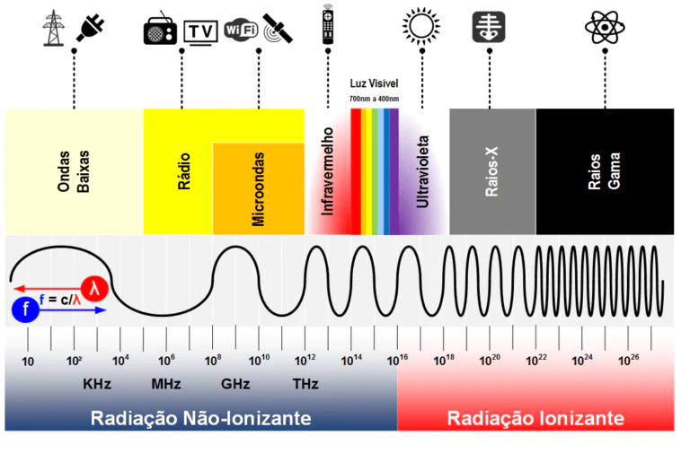
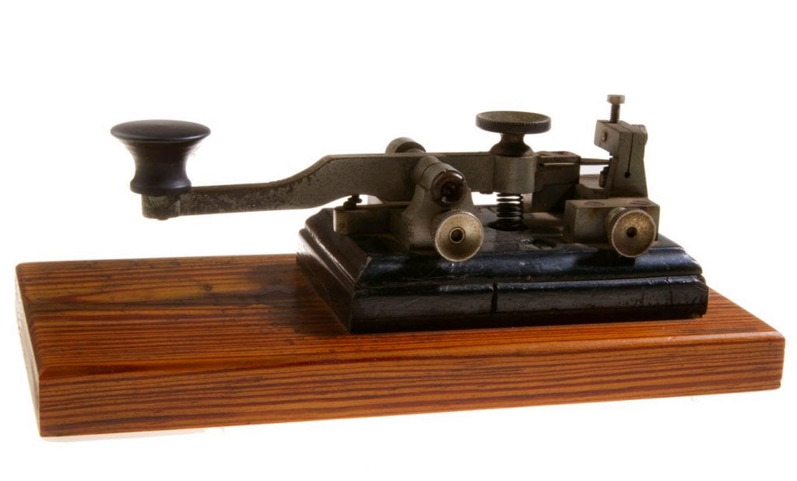
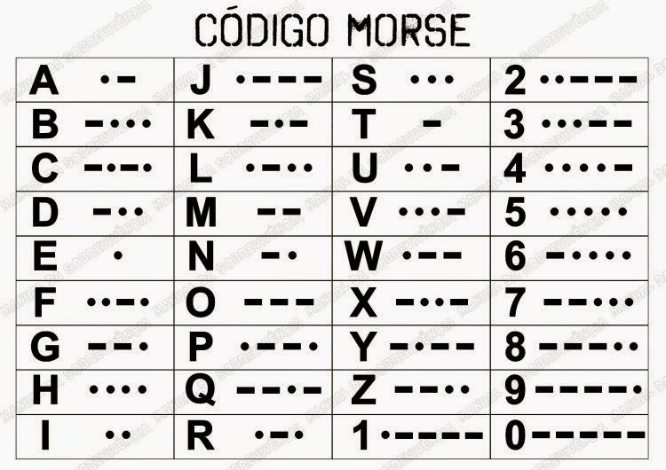

As ondas são perturbações que se propagam pelo espaço sem transporte de matéria, apenas de energia.
O elemento que provoca uma onda é denominado fonte, por exemplo, uma pedra lançada nas águas de um rio gerarão ondas circulares.
Caracteristica da onda
Amplitude: corresponde à altura da onda (A)
Comprimento de onda: Representado pela letra grega lambda (λ), é a distância entre dois vales ou duas cristas sucessivas.
Velocidade: representado pela letra (v), a velocidade de uma onda depende do meio em que ela está se propagando.
Frequência: representada pela letra (f), no sistema internacional a frequência é medida em hertz (Hz)
Período: representado pela letra (T), o período corresponde ao tempo de um comprimento de onda.

Codigo Morse
Desenvolvido em 1835, por Samuel Finley Breese Morse, o Código Morse é um sistema binário de pulsos eletricos em que letras e números são repredentadas por pontos e traços.
É composto por todas as letras do alfabeto e os números de 0 a 9. Os pontos e traços significam intervalos de tempo, rápidos ou longos, podendo ser "beeps"
de um aparelho, o liga e desliga de uma lanterna, muito usado para troca de mensagem na segunda guerra por telegrafo.
Telegrafo

Enigma
Codigo Morse

Desafio
Agora vamos identificar a mensagem que o professor irá passar?